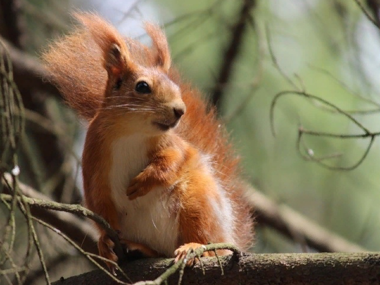
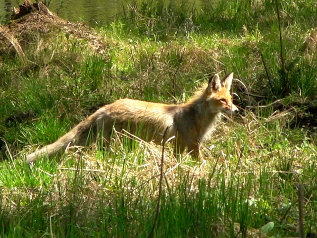
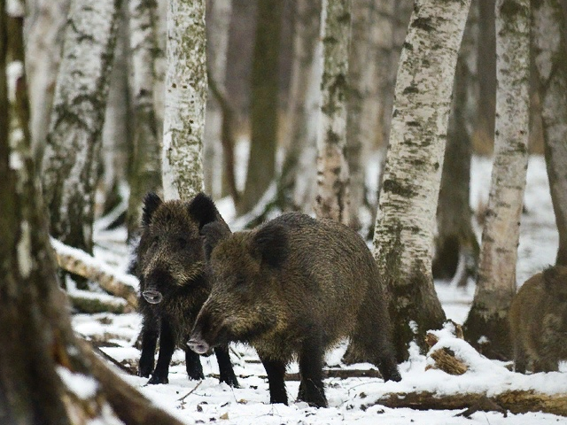
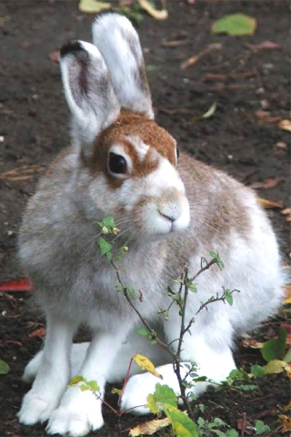

В Битцевском лесу и его окрестностях обитает очень много представителей разных видов животных. например такие как заяц-беляк и заяц-русак. Первого чаще можно встретить в насаждениях с хорошо развитым подлесочным ярусом, то есть кусты и низкие деревья. А второй – предпочитает опушки с примыкающими к лесу сельскохозяйственными угодьями. Также здесь обитает большое количество белок, так как они не особо пугливы, а так же прикормлены посетителями парка. В наименее посещаемых частях леса еще сохранились старые полуразрушенные выводковые норы лисиц, которые в настоящее время не используются из-за преследования собаками и постоянного беспокойства людьми. Однако несколько особей все же приспособились к жизни в таких условиях. Это удивительное явление, но надо не забывать что это дикое животное и приближаться к нему нельзя! Там же иногда можно встретить таких крупных животных как лось и кабан, как правило, это случается весной или летом. Осенью, после опадения листвы, эти животные здесь почти не появляются так как становятся слишком заметные для посетителей. Это довольно опасные животные и стоит помнить о необходимой дистанции. В Битцевском лесу достоверно установлено нахождение 4 видов летучих мышей, но встречаются они крайне редко и придерживаются лесных полян. Главная причина их исчезновения – это сокращение численности ночных летающих насекомых, которыми они питаются. Почти повсеместно встречаются особи обыкновенной бурозубки, исключая лишь наиболее посещаемые и уже полностью деградировавшие участки леса.
|  |  |  |  |